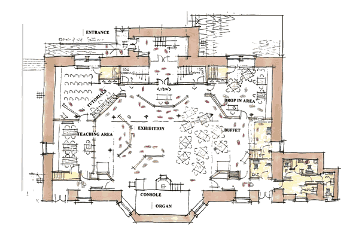

Organisation
The Auld Kirk can offer very attractive facilities and surroundings for a wide variety of users, on a flexible basis, these could include:
- Major Musical Concerts
- Small Special Interest Music Groups
- Drama and Theatrical Concerts
- Art / Crafts Club / Centre
- Bridge / Games Club
- Lecture / Meeting Facilities
- Exhibitions of Art and Cultural Interest
- Horticultural and Floral Interest Groups
- Historical / Preservation Trust Activity
- Country Dancing Club
- Fashion Shows / Presentations
- Fundraising Events / Shows
- Playgroups / Creches
- Family Gatherings
- Outside Concerts in Spring / Summer
- Doors Open ‘Historical’ Days
- Drop in Centre with Cafe / Rest Area

The Group’s proposals are well identified, that is to bring the building into use for Cultural, Educational and Heritage uses, which will of course help to protect the main volume of the Church, the Organ and Windows as a truly atmospheric space. Small rooms and facilities can be added below the galleries in due course as support to the main activities which will take place in a flexible auditorium or Theatrical space which will be utilised by various groups from in and around the Community. In this way we hope that the Building will be revitalised to a prominence for the people of the town.